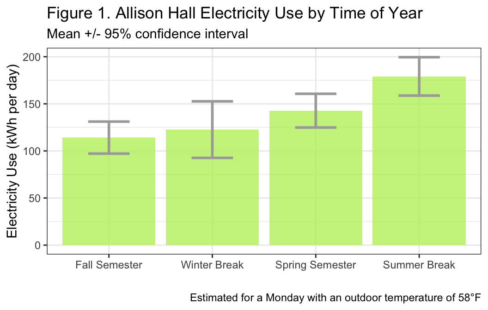
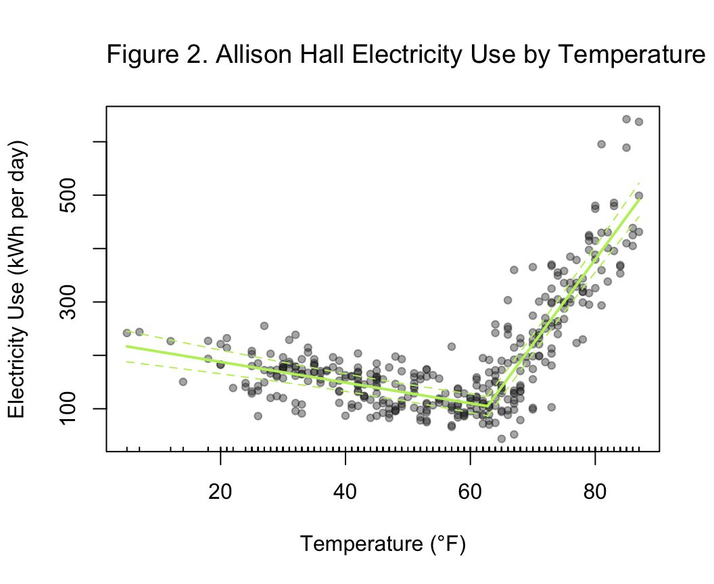

Last updated: 2026-08-19
Checks: 7 0
Knit directory: dickinson_power/
This reproducible R Markdown analysis was created with workflowr (version 1.7.2). The Checks tab describes the reproducibility checks that were applied when the results were created. The Past versions tab lists the development history.
Great! Since the R Markdown file has been committed to the Git repository, you know the exact version of the code that produced these results.
Great job! The global environment was empty. Objects defined in the global environment can affect the analysis in your R Markdown file in unknown ways. For reproduciblity it’s best to always run the code in an empty environment.
The command set.seed(20260107) was run prior to running
the code in the R Markdown file. Setting a seed ensures that any results
that rely on randomness, e.g. subsampling or permutations, are
reproducible.
Great job! Recording the operating system, R version, and package versions is critical for reproducibility.
Nice! There were no cached chunks for this analysis, so you can be confident that you successfully produced the results during this run.
Great job! Using relative paths to the files within your workflowr project makes it easier to run your code on other machines.
Great! You are using Git for version control. Tracking code development and connecting the code version to the results is critical for reproducibility.
The results in this page were generated with repository version 70363c3. See the Past versions tab to see a history of the changes made to the R Markdown and HTML files.
Note that you need to be careful to ensure that all relevant files for
the analysis have been committed to Git prior to generating the results
(you can use wflow_publish or
wflow_git_commit). workflowr only checks the R Markdown
file, but you know if there are other scripts or data files that it
depends on. Below is the status of the Git repository when the results
were generated:
Ignored files:
Ignored: .DS_Store
Ignored: .Rhistory
Ignored: .Rproj.user/
Ignored: analysis/.DS_Store
Ignored: analysis/.Rhistory
Ignored: analysis_to-fix/.DS_Store
Ignored: data/.DS_Store
Ignored: data/FY25 Main Meter Data.xlsx
Ignored: data/building_list_FY25_updated.xlsx
Ignored: data/graph_data_life_exp.csv
Ignored: data/housing_counts.csv
Ignored: keys/.DS_Store
Ignored: output/annual_kwh.csv
Ignored: output/building_check.csv
Ignored: output/building_check.xlsx
Ignored: output/buildings_graph.csv
Ignored: output/daily_kwh.csv
Ignored: output/kwh_academic_2026-03-16.csv
Ignored: output/kwh_academic_2026-03-17.csv
Ignored: output/kwh_academic_2026-03-18.csv
Ignored: output/kwh_academic_2026-03-22.csv
Ignored: output/kwh_academic_2026-03-23.csv
Ignored: output/kwh_academic_2026-03-25.csv
Ignored: output/kwh_academic_2026-03-30.csv
Ignored: output/kwh_academic_2026-04-07.csv
Ignored: output/kwh_academic_2026-04-13.csv
Ignored: output/kwh_academic_2026-04-26.csv
Ignored: output/kwh_annual.csv
Ignored: output/kwh_annual_2026-03-04.csv
Ignored: output/kwh_annual_2026-03-12.csv
Ignored: output/kwh_annual_2026-03-16.csv
Ignored: output/kwh_annual_2026-03-17.csv
Ignored: output/kwh_annual_2026-03-18.csv
Ignored: output/kwh_annual_2026-03-22.csv
Ignored: output/kwh_annual_2026-03-23.csv
Ignored: output/kwh_annual_2026-03-25.csv
Ignored: output/kwh_annual_2026-03-30.csv
Ignored: output/kwh_annual_2026-04-07.csv
Ignored: output/kwh_annual_2026-04-13.csv
Ignored: output/kwh_annual_2026-04-26.csv
Ignored: output/kwh_annual_20260225.csv
Ignored: output/kwh_annual_20260226.csv
Ignored: output/kwh_daily.csv
Ignored: output/kwh_daily_2026-03-04.csv
Ignored: output/kwh_daily_2026-03-12.csv
Ignored: output/kwh_daily_2026-03-16.csv
Ignored: output/kwh_daily_2026-03-17.csv
Ignored: output/kwh_daily_2026-03-18.csv
Ignored: output/kwh_daily_2026-03-22.csv
Ignored: output/kwh_daily_2026-03-23.csv
Ignored: output/kwh_daily_2026-03-25.csv
Ignored: output/kwh_daily_2026-03-30.csv
Ignored: output/kwh_daily_2026-04-07.csv
Ignored: output/kwh_daily_2026-04-13.csv
Ignored: output/kwh_daily_2026-04-26.csv
Ignored: output/kwh_daily_20260225.csv
Ignored: output/kwh_daily_20260226.csv
Ignored: output/kwh_main_annual.csv
Ignored: output/kwh_main_daily.csv
Unstaged changes:
Modified: analysis/campus_summary.Rmd
Modified: analysis/main_meter_clean.Rmd
Note that any generated files, e.g. HTML, png, CSS, etc., are not included in this status report because it is ok for generated content to have uncommitted changes.
These are the previous versions of the repository in which changes were
made to the R Markdown (analysis/Report_II_Community.Rmd)
and HTML (docs/Report_II_Community.html) files. If you’ve
configured a remote Git repository (see ?wflow_git_remote),
click on the hyperlinks in the table below to view the files as they
were in that past version.
| File | Version | Author | Date | Message |
|---|---|---|---|---|
| Rmd | f60de55 | maggiedouglas | 2026-08-15 | Lots of formatting… |
| html | f60de55 | maggiedouglas | 2026-08-15 | Lots of formatting… |
| Rmd | c58899c | maggiedouglas | 2026-07-29 | revised Administrative report II and adjusted header formatting for all report II sections |
| html | c58899c | maggiedouglas | 2026-07-29 | revised Administrative report II and adjusted header formatting for all report II sections |
| Rmd | ae2c118 | maggiedouglas | 2026-07-09 | Reviewed/revised Community section for report II |
| html | ae2c118 | maggiedouglas | 2026-07-09 | Reviewed/revised Community section for report II |
knitr::include_graphics("assets/allison.jpg", error = FALSE)Photo from Dickinson College
| Version | Author | Date |
|---|---|---|
| c82b6b0 | maggiedouglas | 2026-08-15 |
Allison Hall is a former church that was built in 1958 and acquired by Dickinson College for community meeting space in 2013 with no major renovations since its construction (pers. comm, Mike Kiner, spring 2026). It is one of the larger Community Buildings with an area of 33,310 sq. ft and contains two large, open meeting rooms that are heated using two gas boilers and a combination of electrically-powered window units and a centralized unit for cooling (pers. comm, Mike Kiner, spring 2026). The building is used by a capella groups, residence life, and multicultural groups on campus, but it is unclear when and to what degree the building is being utilized (pers. comm, Lindsey Lyons, and ENST 325 students, 2026).
In FY25 Allison Hall used the most electricity of the Community Buildings (77,578 kWh) with a spike in kWh use during summer months. Despite this, Allison Hall only used 2.3 kWh per square foot which is below the electricity intensity values of a typical college/university building in the United States (10.3 kWh/sqft/yr median, EIA 2022). Coming into this analysis we believed that outdoor temperature and period would have the most significant impacts on electricity use in Allison Hall as cooling the buildings with window units is much more electricity intensive than heating the building (pers. comm, Mike Kiner, spring 2026). Furthermore, the additional use of dehumidifiers alongside cooling units may also contribute to the spike in electricity use during the summer months (Amber & Alsam, 2016; pers. comm, Lindsey Lyons).
In the segmented regression model, Allison Hall’s daily electricity use was shown to be significantly related to period (F3,352 = 6.5, P < 0.001), temperature above 63℉ (F1,352 = 96, P < 0.001), and temperature below 63℉ (F1,352 = 23, P < 0.001). It also showed no significant relationship with day of the week (F6,352 = P > 0.05). Overall, the model accounted for 83% of variation observed in Allison’s daily electricity use in FY25 (R2 = 0.83).
Relative to electricity use during the fall semester, there was a significant difference between electricity use during the spring semester and summer break (Figure 1). Interestingly, even after accounting for temperature, electricity use was 25% higher during spring semester and 57% higher over summer break compared to electricity use over the fall semester.
ggplot(conf_period)+
geom_bar(aes(x=period, y=fit), stat="identity", fill="darkolivegreen2", alpha=0.8)+
geom_errorbar(aes(x=period, ymin=lwr, ymax=upr), width=0.4, colour="darkgray", linewidth=1)+
theme_bw()+
labs(x="", y="Electricity Use (kWh per day)", title="Figure 1. Allison Hall Electricity Use by Time of Year", subtitle="Mean +/- 95% confidence interval", caption="Estimated for a Monday with an outdoor temperature of 58°F")
| Version | Author | Date |
|---|---|---|
| ae2c118 | maggiedouglas | 2026-07-09 |
Electricity use and outdoor temperature had a significant non-linear relationship, with a distinct break point falling around 63℉ (Figure 2). At temperatures below 63℉, electricity use declined by 2 kWh for every 1℉ increase in temperature. Conversely, at temperatures above 63℉, electricity use increased by 16 kWh per 1℉ increase.
plot(allison_seg, vcov=vcovHAC(allison_seg),res=TRUE,col = adjustcolor("darkolivegreen2"), conf.level = .95, xlab="Temperature (°F)", ylab="Electricity Use (kWh per day)")
title("Figure 2. Allison Hall Electricity Use by Temperature", adj = 0, cex.main = 1.2, font.main = 1)
| Version | Author | Date |
|---|---|---|
| ae2c118 | maggiedouglas | 2026-07-09 |
The statistical model for electricity use in Allison Hall including temperature, time of year, and day of the week explained 83% of the variation in daily electricity use in FY25. As expected, temperature was a key variable relating to electricity usage. The break point of 63℉ falls just below the EIA’s standard of 65℉ (EIA, 2022), and aligns with the external temperature at which most of Dickinson’s buildings are set to begin cooling (pers. comm., Mike Kiner, April 2026).
After controlling for temperature, our analysis revealed that there were still significant increases (25-57%) in electricity use in Allison Hall during both spring semester and summer break compared to electricity use in the fall semester. This particular finding suggests that there is something other than outdoor temperature driving an increase in electricity during certain seasons. From personal communications with Mike Kiner, we believe high humidity may be the primary driver behind this seemingly seasonal pattern. Due to age and lack of renovation, humidity control and mold prevention are two major concerns for the long-term maintenance of Allison Hall. Each year once temperatures begin to rise, dehumidifiers are installed to help combat moisture and prevent mold (pers. comm, Mike Kiner, April 2026). Due to the fact that relative outdoor humidity is known to have a moderate relationship and effect on electricity usage (Amber & Aslam, 2016), coupled with the fact that there was a significant pattern produced by the use of these dehumidifiers as seen in our model, we recommend evaluating whether or not it is worth centralizing dehumidification in Allison Hall.
Amber, K. P., & Aslam, M. W. (2016). Energy-related environmental and economic performance analysis of two different types of electrically heated student residence halls. International Journal of Sustainable Energy, 37(3), 278-293. https://doi.org/10.1080/14786451.2016.1174703
Energy Information Administration (EIA). (2022). 2018 Commercial Buildings Energy Consumption Survey (CBECS). https://www.eia.gov/consumption/commercial/
Dinela Dedic revised code from prior problem sets to check the fit of the model and create electricity use figures. They also wrote the Background section of the report. Emma Keane wrote the Results for the figures summarizing key findings and completed the Recommendations section of the report. Both partners reviewed and revised one anothers’ work.
No AI was used in writing code, notes, or recommendations.
sessionInfo()R version 4.6.0 (2026-04-24)
Platform: x86_64-apple-darwin20
Running under: macOS Ventura 13.7.8
Matrix products: default
BLAS: /Library/Frameworks/R.framework/Versions/4.6-x86_64/Resources/lib/libRblas.0.dylib
LAPACK: /Library/Frameworks/R.framework/Versions/4.6-x86_64/Resources/lib/libRlapack.dylib; LAPACK version 3.12.1
locale:
[1] en_US.UTF-8/en_US.UTF-8/en_US.UTF-8/C/en_US.UTF-8/en_US.UTF-8
time zone: America/New_York
tzcode source: internal
attached base packages:
[1] stats graphics grDevices utils datasets methods base
other attached packages:
[1] sandwich_3.1-1 lmtest_0.9-40 zoo_1.8-15 segmented_2.2-1
[5] nlme_3.1-169 MASS_7.3-65 car_3.1-5 carData_3.0-6
[9] tseries_0.10-61 lubridate_1.9.5 forcats_1.0.1 stringr_1.6.0
[13] dplyr_1.2.1 purrr_1.2.2 readr_2.2.0 tidyr_1.3.2
[17] tibble_3.3.1 ggplot2_4.0.3 tidyverse_2.0.0 workflowr_1.7.2
loaded via a namespace (and not attached):
[1] gtable_0.3.6 xfun_0.59 bslib_0.11.0 processx_3.9.0
[5] lattice_0.22-9 callr_3.7.6 tzdb_0.5.0 quadprog_1.5-8
[9] vctrs_0.7.3 tools_4.6.0 generics_0.1.4 curl_7.1.0
[13] xts_0.14.2 pkgconfig_2.0.3 RColorBrewer_1.1-3 S7_0.2.2
[17] lifecycle_1.0.5 compiler_4.6.0 farver_2.1.2 git2r_0.36.2
[21] getPass_0.2-4 httpuv_1.6.17 htmltools_0.5.9 sass_0.4.10
[25] yaml_2.3.12 Formula_1.2-5 later_1.4.8 pillar_1.11.1
[29] jquerylib_0.1.4 whisker_0.4.1 cachem_1.1.0 abind_1.4-8
[33] tidyselect_1.2.1 digest_0.6.39 stringi_1.8.7 labeling_0.4.3
[37] splines_4.6.0 rprojroot_2.1.1 fastmap_1.2.0 grid_4.6.0
[41] cli_3.6.6 magrittr_2.0.5 withr_3.0.3 scales_1.4.0
[45] promises_1.5.0 timechange_0.4.0 TTR_0.24.4 rmarkdown_2.31
[49] httr_1.4.8 quantmod_0.4.29 otel_0.2.0 hms_1.1.4
[53] evaluate_1.0.5 knitr_1.51 rlang_1.2.0 Rcpp_1.1.1-1.1
[57] glue_1.8.1 rstudioapi_0.19.0 jsonlite_2.0.0 R6_2.6.1
[61] fs_2.1.0